The words you need
The Print Suite is two modules that also work alone: Label Designer designs and prints labels, Direct Print sends any Odoo document straight to a printer. With both installed they join on their own.
Label templates
Open Inventory > Configuration > Labels > Label Templates.
| Template | Prints for | Size |
|---|---|---|
| Product 50 x 25 mm | Products | roll |
| Variant 50 x 25 mm | Product variants | roll |
| Lot / Serial 60 x 40 mm | Lots and serial numbers, with expiry | roll |
| Package 100 x 50 mm | Packages | roll |
| Location 70 x 30 mm | Locations, with a QR code | roll |
| Price tag, A4 sheet 3 x 8 | Product variants | 24 per A4 sheet |
- Size is in millimetres, to the hundredth.
- Roll prints one label after another, for label printers. Sheet places several on an A4 or US Letter page, with columns, rows, margins and spacing.
- ZPL resolution must match the Zebra: 203 or 300 dpi. A 203 dpi printer fed a 300 dpi label prints it too big.
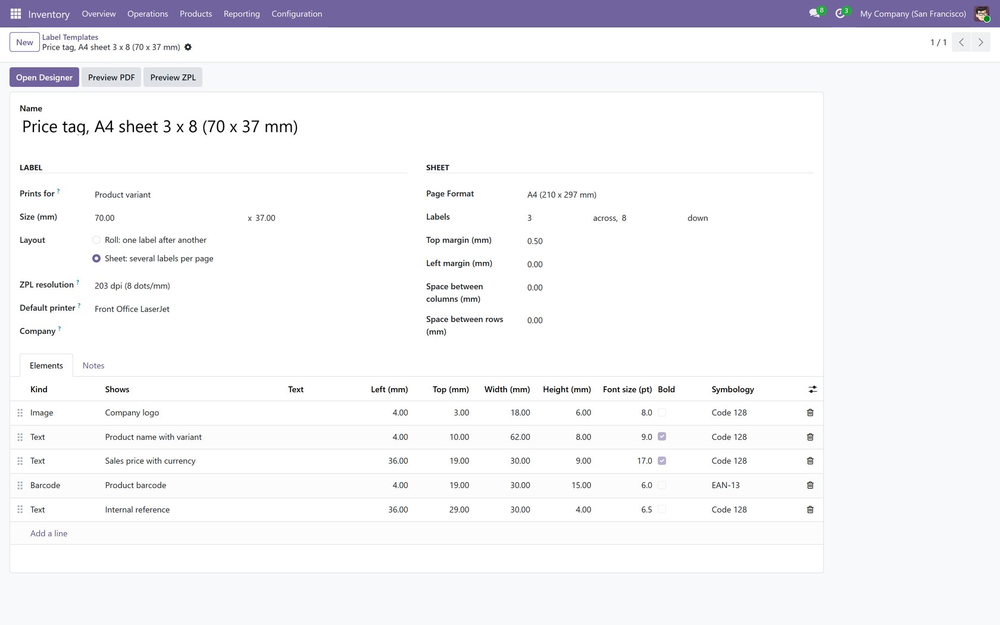
Design a label
- Open a template and press Open Designer.
- Add elements from the left: Text, Barcode, Logo or image, Line, Box, or one click on a field such as Sales price with currency or Expiry date.
- Drag to move, drag the blue corner to resize. Arrow keys move by 0.5 mm, with Shift by 5 mm; Delete removes.
- In the right panel set what it shows, a caption in front ("Exp: "), the exact position and size in millimetres, the font size, bold, alignment and, for a barcode, the symbology.
- Press Save, then Preview PDF or Preview ZPL.
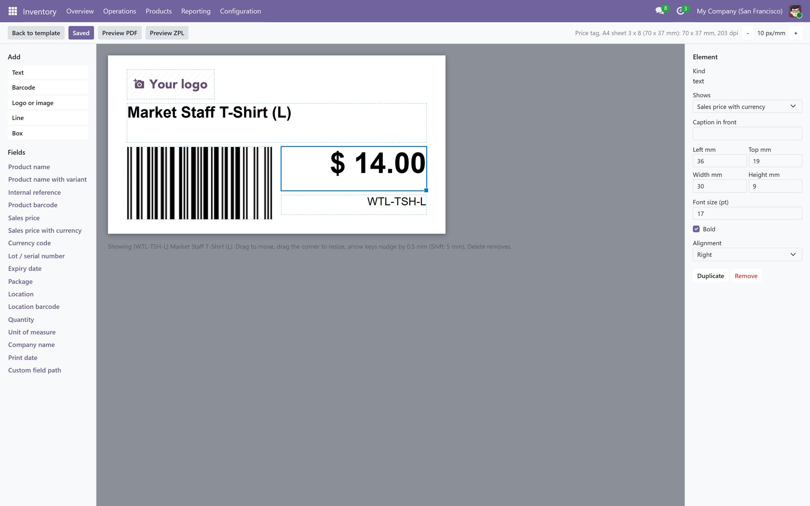
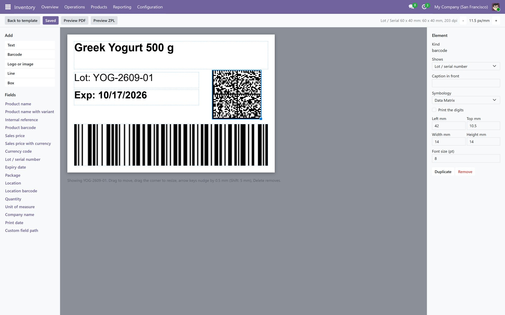
Barcodes: EAN-13, EAN-8, UPC-A, Code 128, Code 39, QR and Data Matrix. A value the symbology cannot carry, such as an EAN with a wrong check digit, is refused with the reason and never swapped for another symbology.
Print labels
- Select records and open Print > Labels (designer), or press Labels on a receipt or delivery.
- On a transfer choose One label per unit (2 dozen are 24 labels; 12.5 kg is one label) or One label per line. Labels each multiplies either; every line's count can be changed.
- On a sheet, Skip positions leaves the first positions of a partly used sheet empty.
- Press Print PDF, Download ZPL or Show ZPL.
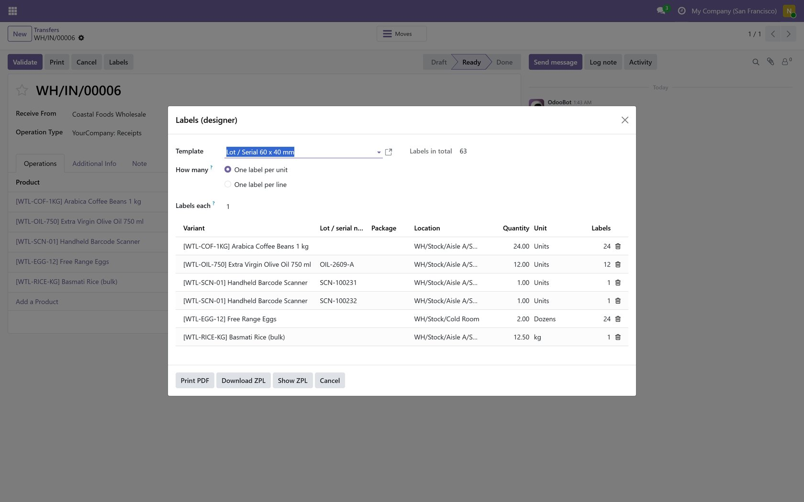
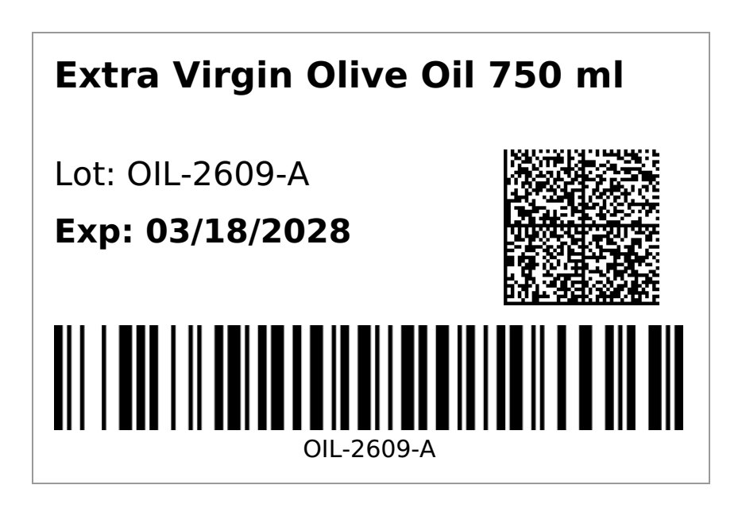
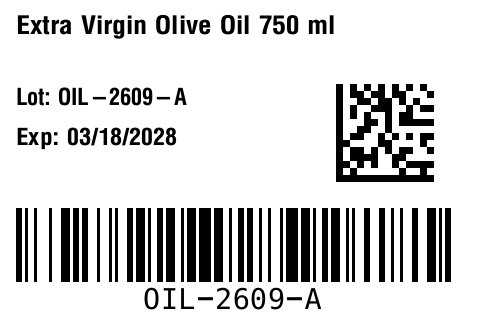
Install the print agent
- In Printing > Configuration > Settings press Download the agent and unzip it on a computer that sees your printers, for example to C:\Program Files\WT Print Agent.
- Install Python 3.10 or newer from python.org, then in that folder run python -m pip install -r requirements.txt.
- In Printing > Configuration > Print Agents create the agent and press Pair. Run the command it shows. The code works once and for 30 minutes.
- Run powershell -ExecutionPolicy Bypass -File install-windows.ps1 so the agent starts with Windows. On Linux, use the systemd unit in the zip.
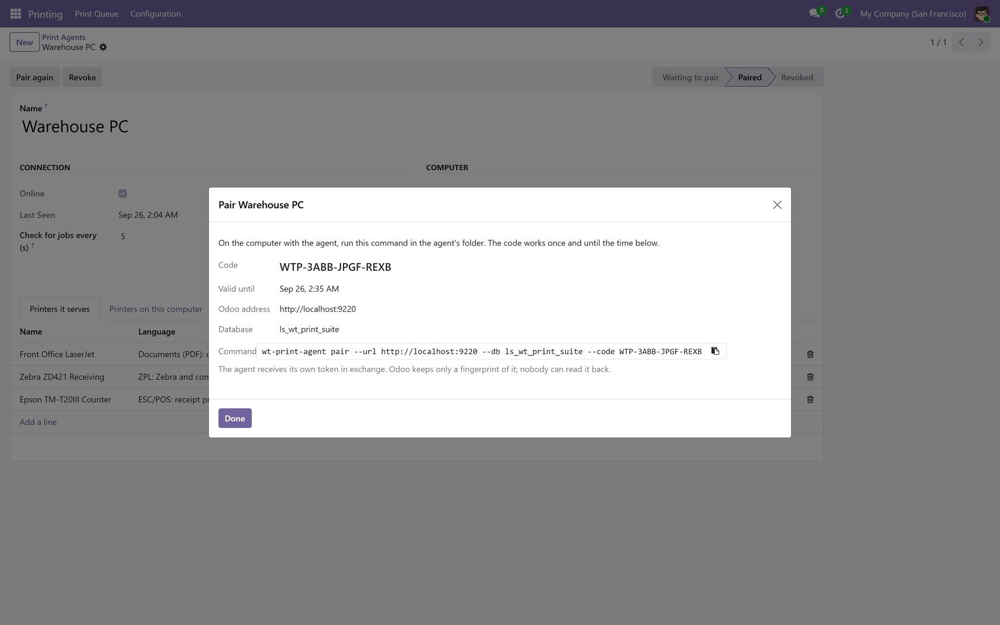
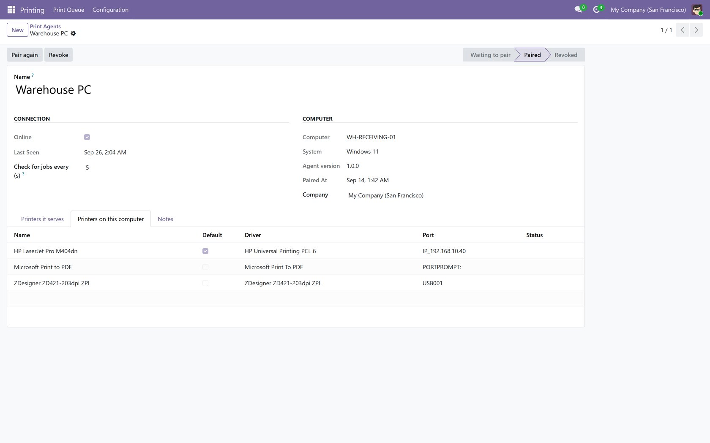
The agent calls Odoo over HTTPS; Odoo never calls it. Nothing changes on your firewall, and Odoo can run in the cloud. Revoke stops an agent at once.
Add your printers
- What it prints: Documents (PDF), ZPL, ESC/POS or Raw.
- Through a print agent: a printer installed on the agent's computer (pick it from the list the agent reports) or a network printer by IP address and port.
- Straight from the Odoo server: a network label or receipt printer the server itself reaches, on port 9100. The server only connects to the ports allowed in Settings.
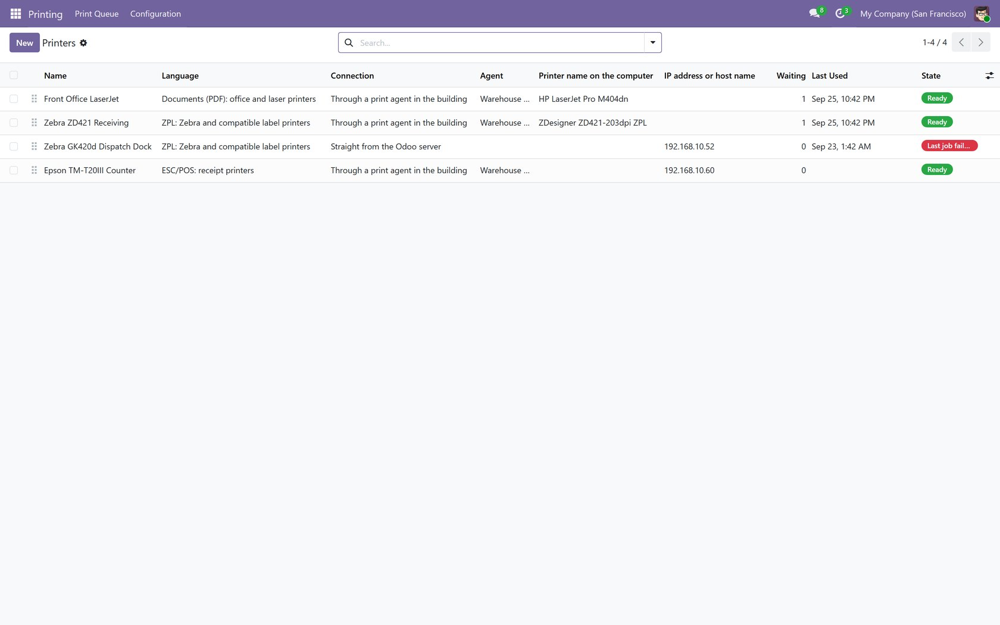
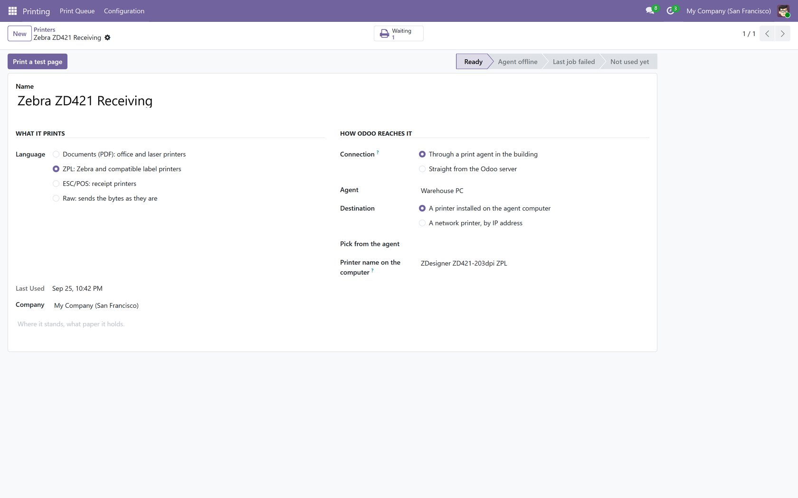
Printing rules
A rule names a printer and the copies and may be narrowed to one report, one user and one workstation. When someone prints a report and a rule matches, it goes to the printer and a note says where; otherwise it downloads as usual.
When several rules match, the most specific wins: a workstation counts 4, a user 2, a report 1; ties go to the lower sequence. People choose their workstation, and whether to print without preview, under avatar > Preferences > Printing.
With the free companions a rule can also print when a transfer is validated or when an invoice is confirmed. A document that fails to print gets a note in its chatter and never undoes the validation.
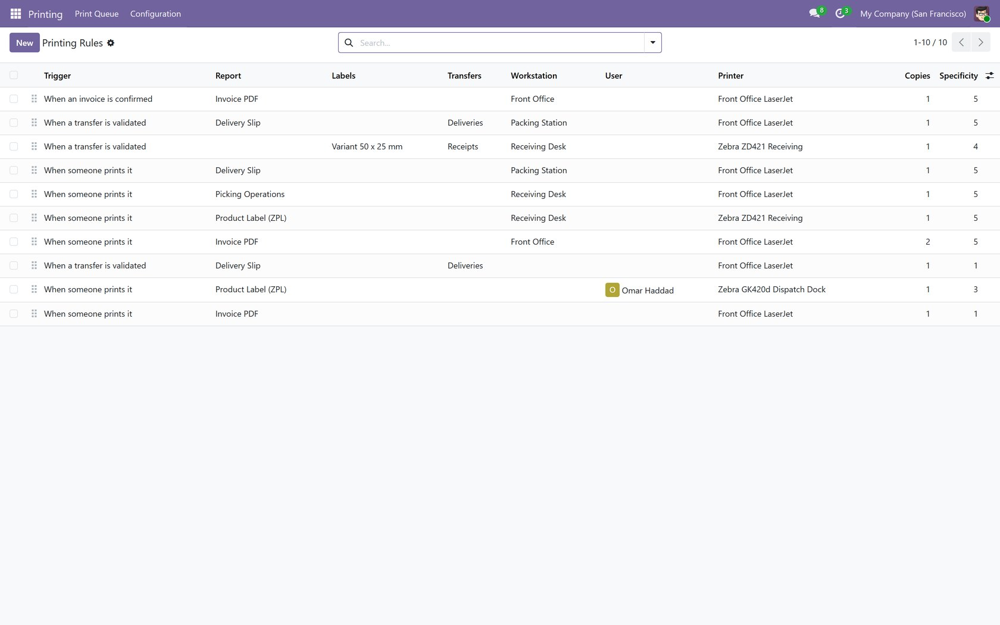
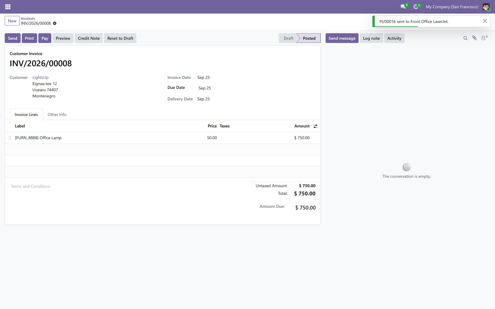
The print queue
Printing > Print Queue lists every job with its document, printer, sender and status. A failed job is tried again after 30 seconds, 2 minutes and 10 minutes, then marked failed; select jobs and press Send again. A job the agent took and never confirmed goes back to the queue after 10 minutes. Printed jobs are deleted after 30 days.
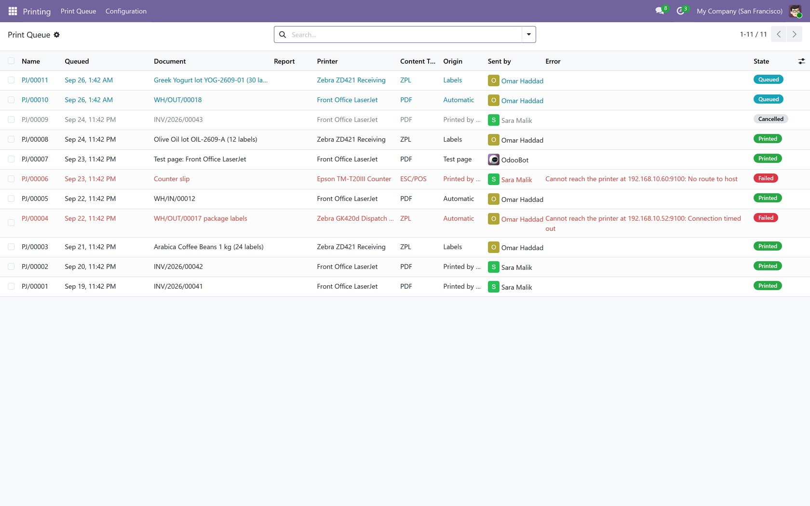
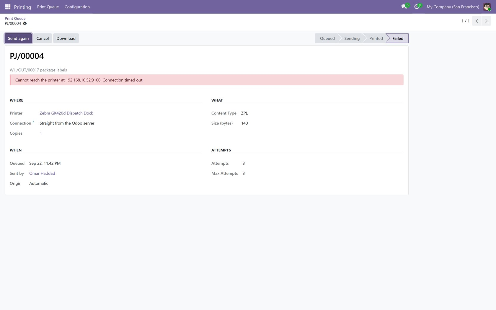
Labels straight to the printer
- The label dialog gets a printer and Send to printer: a ZPL printer receives exactly the ZPL of the design, a document printer the PDF.
- Each template can have a Default printer.
- A rule when a transfer is validated can print labels instead of a report: a receipt of 12 units then prints 12 labels at the receiving desk the moment it is validated.
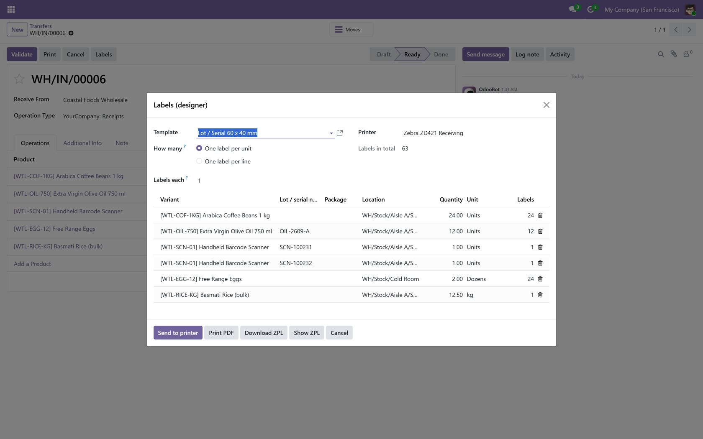
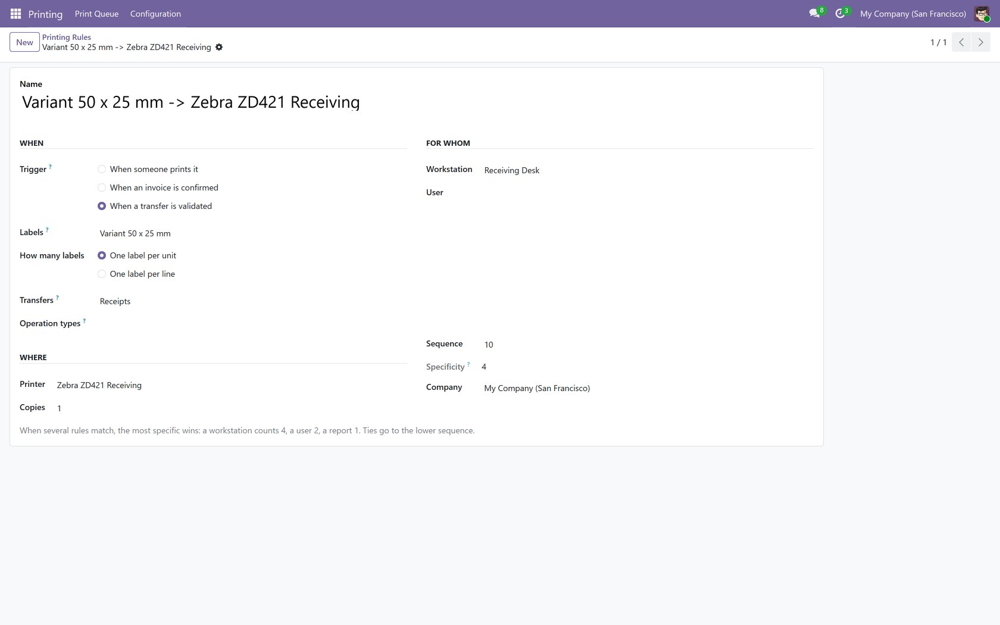
Check on your own printers
- Set the label size and media type (gap or black mark) in the printer's own settings, then calibrate it.
- Print a test page from the printer form; the 100 mm line should measure 100 mm.
- Print one real label from each template you use; check it is not shifted or cut.
- Match the template's ZPL resolution to the printer (203 or 300 dpi); adjust darkness and speed for your label stock.
- Scan every barcode with the scanner you use at the till or in the warehouse.